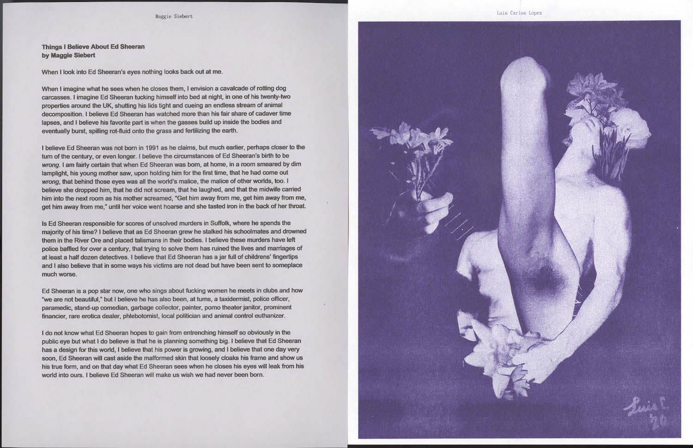
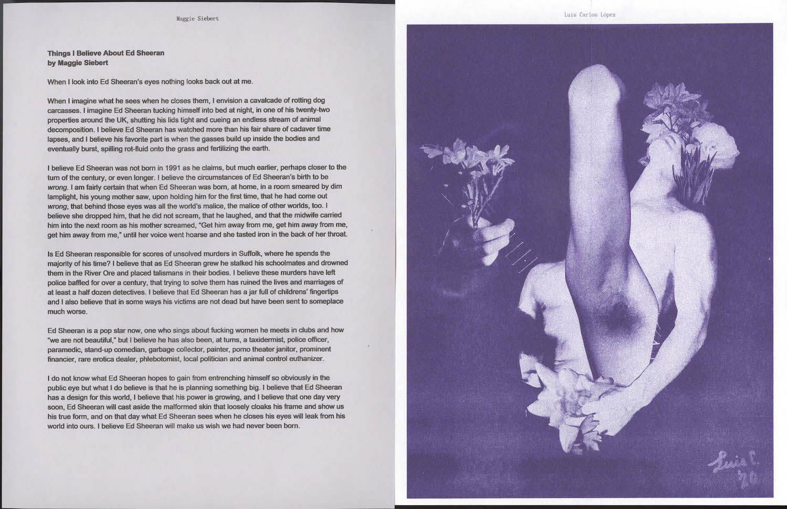
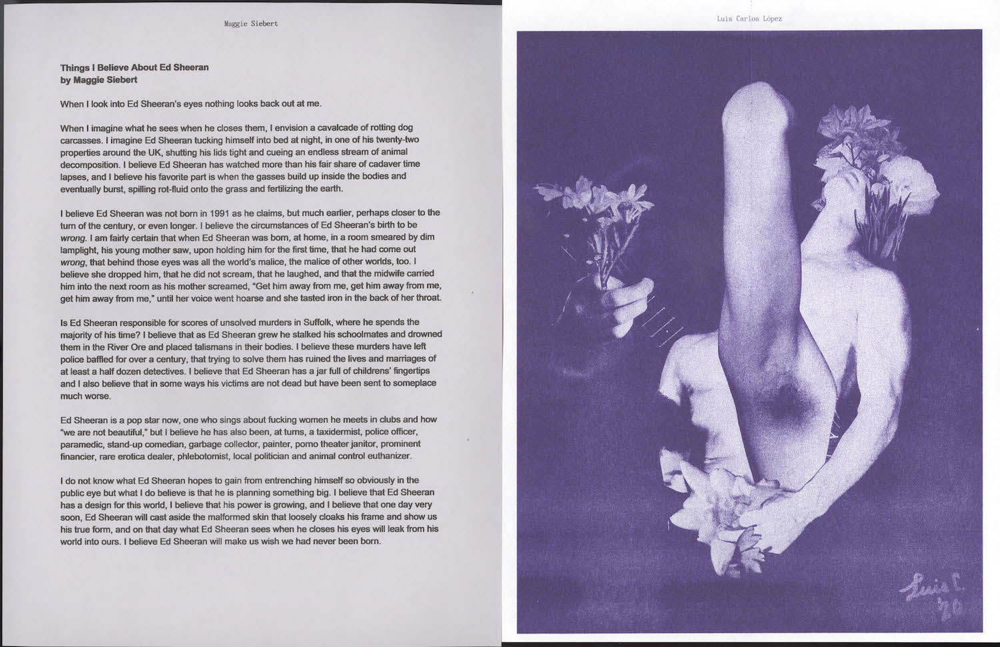

Urgency Reader 2: Mutual Aid Publishing During Crisis began with a 10-day open call that was announced on March 18, 2020 in response to the COVID-19 pandemic. The call for work was motivated by two desires:
1—to collectively document some of the extraordinary conditions, dynamics, and emotions being experienced while in quarantine, and 2—to provide some relief to artists and writers impacted by the crisis, in both creative and monetary forms. How might publishing as artistic practice embody communal care?
More than 100 artists and writers submitted work, mostly generated during quarantine. Contributors were compensated a total of $2,295, using funds from a 2020 Rhode Island State Council on the Arts grant, plus an anonymous donation. 65 of the 110 contributors donated their share of the compensation back to the pool, resulting in 45 contributors each receiving a stipend of $51.
An edition of 25 copies of Urgency Reader 2 was printed and assembled at Queer.Archive.Work during the first week of April 2020. A high-quality scan of the printed edition is available for free download (see below). Physical copies of the reader have been permanently placed in our library for future visitors, once it’s safe to re-open to the public. Additionally, 15 printed copies are immediately available for purchase ($100 including shipping, tax-deductible); email Paul to inquire. All proceeds will be used to fund Riso Residencies artists’ stipends at Queer.Archive.Work.


Urgency Reader 2: Mutual Aid Publishing During Crisis
- Loose assemblage of 129 prints, folded sheets, and zines
- Rubber bands and plastic bag
- 278 pages + cover
- Risograph printed with black, teal, purple, burgundy, and fluorescent pink inks on various papers
- Edition: 25 hand-numbered copies
DOWNLOAD URGENCY READER 2
Lower-res scan of printed edition (203MB PDF)
High-res scan of printed edition (1.73GB PDF)
 

Contributors and contents
- AK/OK—(Kate Jarboe + M. Wright)—All together now! Neighbourhood dispatches from Montréal, March 2020
- Adam Chuong—New Horizons
- Alessandro Ghio, Nicholas McGuigan,
Lisa Powell—A Queer Accounting Manifesto
- Alexis Erickson—Beautiful Faces
- Andrew W. Smith—Collapse
- Anna Gardner—no time
- anobelisk—Bippy goes to Hell
- Anonymous—To the RISD Community
- Anonymous—A Call for Complaint: for Plague Speech, for Sick Speech.
- Anonymous Nurses—Pattern for a face mask
- Ant M Lobo—Untitled Digital Collage
- Anthony Warnick—We Will Not Be The Final Generation
- Anzia Anderson—calendar
- arthur katrina—NOTES FROM WEEK ONE : THE RELUCTANT HERMIT, THE INTIMATE APOCALYPSE, VIRUS DAZE INTUITIVE MIXTAPES VOL. 1–5
- Athena Zeros—day break bird
- Azulae Northa—Looking in
- Bailey Steele—Meet Me Inside
- Be Oakley—Collective Self Isolations: Thoughts on Radical Softness as a Boundless Form of Resistance during a Pandemic
- bean drake—Fair winds and Following Seas
- brook vann—ataraxic blue
- Cade Diehm & Edward Anthony,
The New Design Congress—Welcome to the Artificial Wilderness
- Caiti Borruso—On being laid off
- Carlos Kong—Faden/Thread
- Carmen Ribaudo—Primaveral Drawings
- Caroline Sorin—canwepanicnow.gif
- chariot wish—GOD BLESS YOU IN EVERY WAY POSSIBLE, GODFAG, EVIL BITCH PARADISE
- Chr. Winther—04.44.44
- Christian Ortiz—Human Movement Slowdown
- Christopher Cole
- claire m.—prophecies now!
- Connor Frew—WHAT WAS MIES THINKING (HEALTHCARE FOR ALL)
- corinne ang—walking distance
- D Rosen—Swallow your puppy–
- Danny Aldred—Nullius in Verba
- Dylan Tescher W.—Princess Dress
- Edwige Charlot—kay lòt moun / home of others
- Elaine Lopez—How empathy, inclusion, and community in my classroom have prepared me to deal with the disruptions of Covid-19
- Elie Andersen—What We Ate
- Elisabeth Nicula—March 27, 2020
- ellen zahniser—THE SPLINTERED STRUCTURES OF HISTORY TOWER ABOVE AS I WALK ALONG
- Emma Kemp with May Hoover, Angel Barris, Brittany Carter, Adriene Im—Correspondences (Otis College)
- Erik Freer—The Inheritance
- everett epstein—are you guys up for some reggae tonight?
- GOVERNANCE (Rebecca Uliasz and Quran Karriem)—Sunsetting the Species
- Gregory Ghilani Fawkes—Fire shower
- Greta Huang Skagerlind—Poem re: striding
- Gu—Elsewhere
- Hannah Azar Strauss—Sacred Heart Sinks
- Hugo Gallo—Hugo’s Quarantime Dispatch
- Jake Dugard—S•O•S
- Jennifer Tobias—Untitled
- Joe Potts—Unfolding Inquiries: notes from the Southland Institute on some considerations as online education moves into the foreground
- John-Francis Quiñonez—I Know, in Some Ways, I Must be Answering for All the Times I Begged for More Time in my Kitchen (Poem)
- Joshua Duttweiler—Aren’t We All, Just Keep Swimming, We Are, We Ell Hand Sanitizer
- Katherine Ye—24 hours in Pittsburgh
- kathy cho & rachel hrbek—it’s ok
- Kelsey Sucena & Nessa Grasing—The Leech Manifesto
- Kirslyn Schell-Smith—Per My Last E-Mail
- Kit—futurity
- Kitt Peacock—First Night Fever Dream for Pauvi Tem
- L S—Claustrophobic haze of blossoms
- Laith A. Ayogu—Boiled, hole
- laura lamb brown-lavoie—“Thing I used to do with my tongue”—“Well I guess we are in this now” (that one is three parts)
- Lauren Stroh—DAY FOUR
- Lermworm—Quarantine Thoughts (What happens next?)
- Lisa J. Maione—One After Another; Future Dream
- Logan K. Young—Six Uneasy Pieces
- Louise Drulhe—Quarantine - Day 10
- Louna Bou Ghanem—I’m re-experiencing feelings
- Luis Carlos López—Quarantine sucks and I take delight
- Mae Eskenazi—Becoming Expansive
- Maggie Siebert—Things I Believe About Ed Sheeran
- Marisa Fulper Estrada—Static Freefall
- Miriam Navarro Prieto—When This All Ends
- Molly Soda
- Nafis M. White—Social Distance Musings in the Rona Era
- nicole killian—toto caelo
- Nina Muccia—at home at last forever
- Noa Mori—In the Wake of the Crisis We Must // A Thin Layer of Sanitizer & Fear
- Norah Gunn—“Untitled”
- Olive B. Godlee—Weeks After the Last Party
- Oliver/Olivier—Being In Flux
- Pablo Lerma—The Impossibility of Looking Outside and/or How To Think About Care
- Paul Maheke—The Year I Stopped Making Art
- Pickle Partisans—Phase-Shift
- Rachel Hrbek—The Tower
- Rebecca Gates—Untitled 2020327
- Rebecca Wilkinson
- Rena Rong—Musings from Elmwood
- robynn.xyz—OS/error
- Ruben Castillo—Stills from a video performance, Fluff
- Ryan Skrabalak—American Water Round I
- Rylie LAWVER—a post frontier proposal
- Sabrena & Rose Ghostly—Absurdities Amidst the Virus
- Sal Randolph—Urgent Sonnets
- sam m-h—A Note--for Digital Dwellers/Dwelling
- Sara Inacio—little armored one
- Shou Jie Eng—‘Her shelves contained the world’
- Sigrid Pauen—Very Late Capitalism
- Sophia Le Fraga—When You Talk
- Sophie Seita and Naomi Woo—Manifesto of The Hildegard von Bingen Society for Gardening Companions
- T. Deutch—We Will Keep Going
- Taehee Whang—Diary Log-3.25.2020
- tess brown-lavoie—resist austerity and do not touch face
- The Making Public Collective (corresponding author Miriam Rasch)—Introduction to Here & Now? Explorations in Urgent Publishing
- Tiara Roxanne—Digital Attunement (an introduction)
- Tiffany Patterson—Works from the quarantine–March 2020
- wermo—derangements
- Wil van Iersel—Headlines
- Zoë Pulley—ME, MYSELF & I / A WALK
Edited and published by Paul Soulellis
